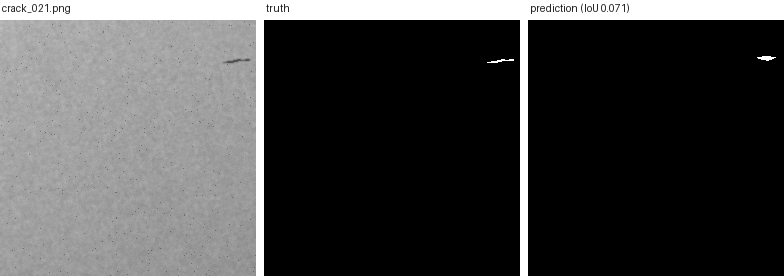
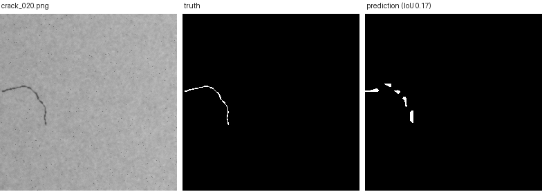
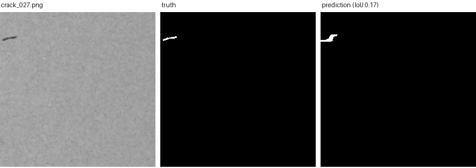
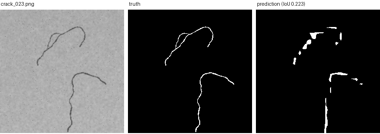
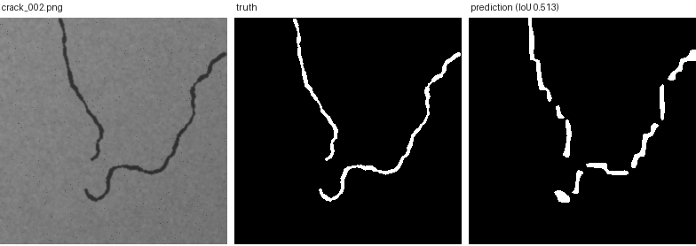
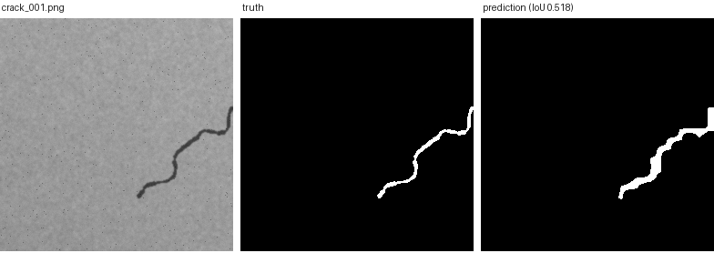
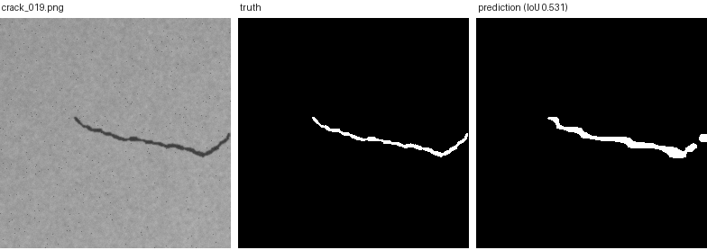
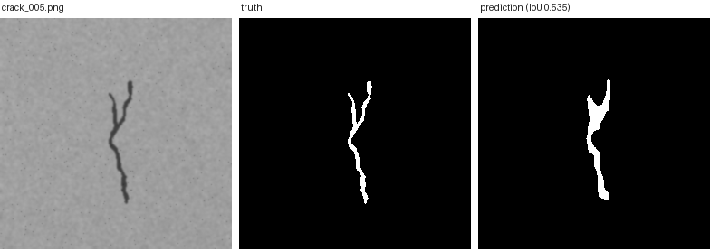
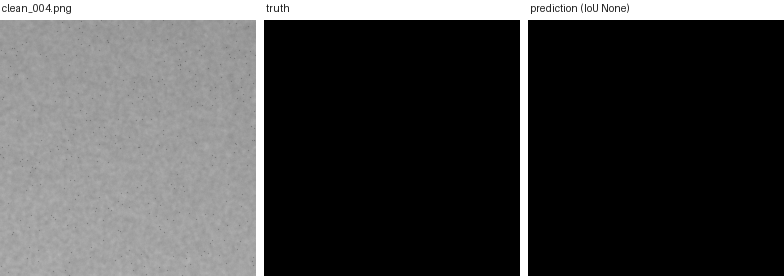

DeepLabV3 MobileNetV3-Large fine-tuned from the TorchVision checkpoint · 120 training images · 384 px · threshold 0.65 chosen on the validation split
| Test split | Images | Mean IoU (crack images) | Dataset IoU | Pixel precision | Pixel recall | Clean images with false crack pixels |
|---|---|---|---|---|---|---|
| test | 40 | 0.384 | 0.411 | 0.469 | 0.767 | 0 / 13 |
Tolerant F1 (offsets up to 2 px forgiven, the usual crack-benchmark convention): 0.914 mean over crack images.
| Threshold | Val IoU | Precision | Recall |
|---|---|---|---|
| 0.10 | 0.345 | 0.349 | 0.974 |
| 0.15 | 0.361 | 0.366 | 0.962 |
| 0.20 | 0.373 | 0.381 | 0.951 |
| 0.25 | 0.383 | 0.393 | 0.937 |
| 0.30 | 0.391 | 0.404 | 0.921 |
| 0.35 | 0.396 | 0.414 | 0.904 |
| 0.40 | 0.402 | 0.423 | 0.888 |
| 0.45 | 0.406 | 0.432 | 0.870 |
| 0.50 | 0.409 | 0.440 | 0.850 |
| 0.55 | 0.411 | 0.449 | 0.829 |
| 0.60 | 0.413 | 0.459 | 0.805 |
| 0.65 | 0.413 | 0.468 | 0.779 |
| 0.70 | 0.412 | 0.477 | 0.750 |
| 0.75 | 0.407 | 0.486 | 0.713 |
| 0.80 | 0.396 | 0.494 | 0.667 |
| 0.85 | 0.381 | 0.503 | 0.612 |
| 0.90 | 0.355 | 0.512 | 0.536 |
| Epoch | Train loss | Val IoU | Seconds |
|---|---|---|---|
| 1 | 1.4946 | 0.167 | 80 |
| 2 | 1.1088 | 0.279 | 55 |
| 3 | 0.9901 | 0.255 | 71 |
| 4 | 0.8991 | 0.319 | 70 |
| 5 | 0.8269 | 0.308 | 76 |
| 6 | 0.7583 | 0.354 | 67 |
| 7 | 0.7123 | 0.364 | 74 |
| 8 | 0.6616 | 0.343 | 72 |
| 9 | 0.6584 | 0.371 | 72 |
| 10 | 0.6211 | 0.386 | 68 |
| 11 | 0.5940 | 0.401 | 59 |
| 12 | 0.5654 | 0.405 | 72 |
| 13 | 0.5737 | 0.399 | 62 |
| 14 | 0.5464 | 0.409 | 61 |
| 15 | 0.5698 | 0.397 | 57 |
Left: input. Middle: truth mask. Right: prediction (crack probability above the threshold).








